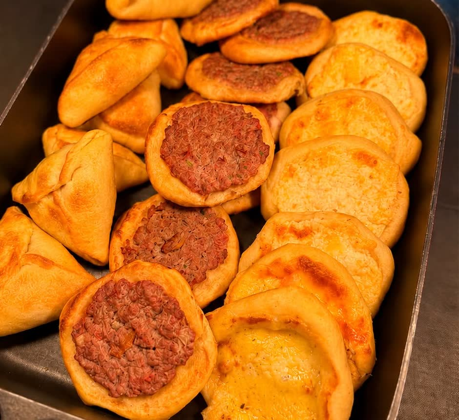
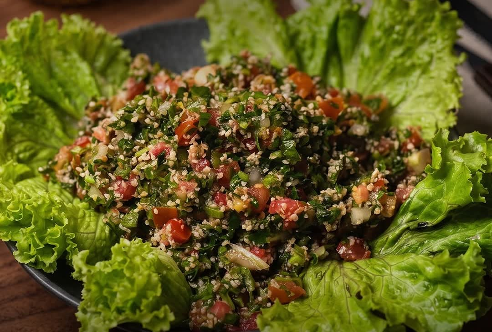
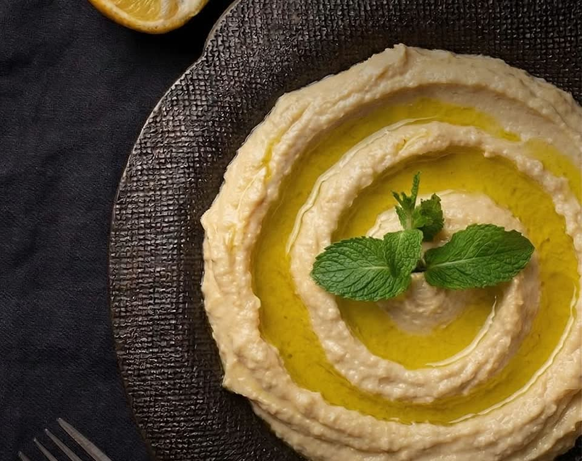
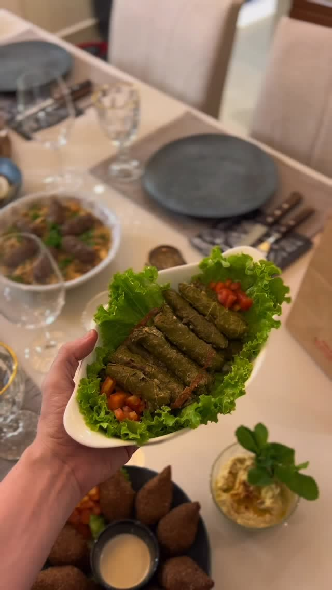
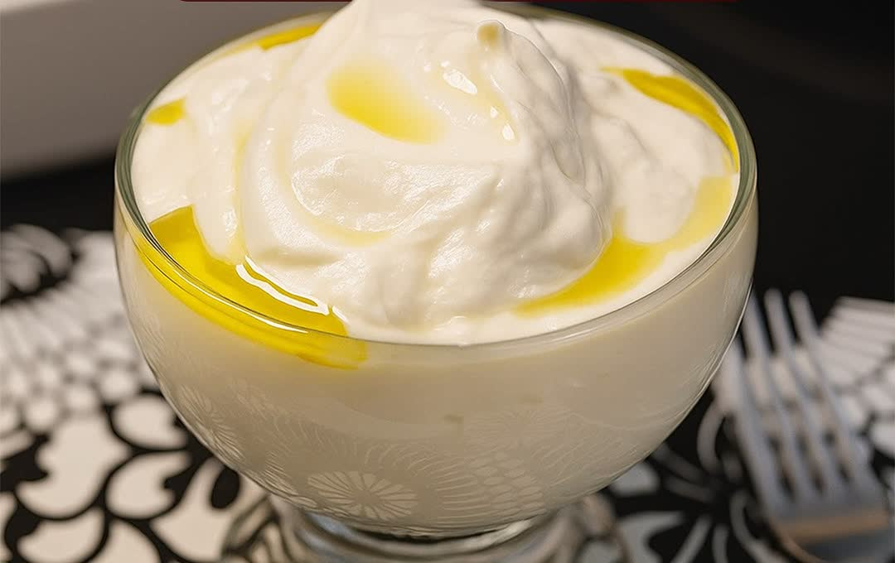
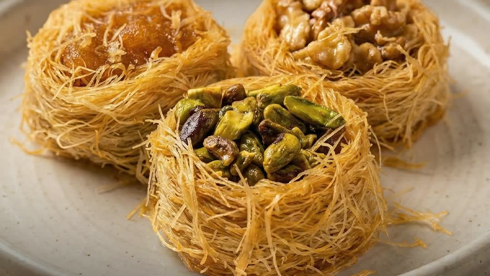

No bufêصفيحة
Esfihas
Massa fininha, assada na hora. A de ricota com hortelã é das mais pedidas.
O bufê libanês da família Chedid Ayache no Mercadão da Ferroviários, em Jundiaí. De terça a domingo, das 11h às 15h, você monta o prato do seu jeito. Ou pede pelo iFood.
Os que mais passam pelo balcão. Continue rolando, ou veja o cardápio completo.

No bufêMassa fininha, assada na hora. A de ricota com hortelã é das mais pedidas.
 No bufê
No bufêTrigo e carne temperada com hortelã, frito na hora.

FrioSalsinha, trigo, tomate, limão e azeite.

FrioGrão-de-bico, tahine, limão e um fio generoso de azeite.

No bufêFolha de uva enrolada com arroz e carne temperada.

FrioCremosa e levemente ácida, com azeite por cima.

DoceMassa de fios com pistache, nozes ou damasco.
Veja tudo que passa pelo balcão ou já faça seu pedido.